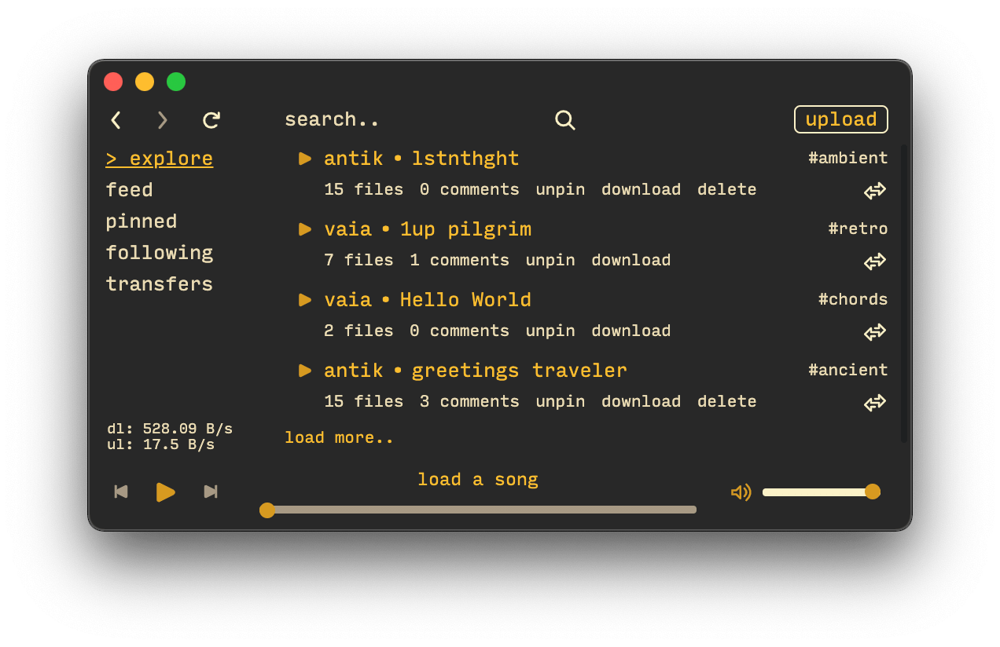

The v0.0.5-alpha release brings major changes to the MFS structure of uploaded files by introducing a new .ohm file type. Other minor bug fixes and new features are listed here.
A .ohm file is now included in the root folder of every song/album. The file includes information about the artists whose work is included in the uploaded folder as well as the upload state. The ohm client treats a .ohm file like an .ous file and is therefore able to recunstruct an upload.
This functionality was included so that anyone with a local copy of a given song/album will be able to reproduce the upload in the future if needed.
Custom user theme functionality has now been added to ohm. The theme of ohm can be changed by creating/modifying a theme.json file located in:
linux: $XDG_CONFIG_HOME or ~/.config/ohm macos: ~/Library/Application Support/ohm windows: %APPDATA%\ohm
The theme.json file has the following structure (the values below are the defaults):
{
"--f-highest": "#eee",
"--f-high": "#ccc",
"--f-mid": "#bbb",
"--f-low": "#888",
"--b-high": "#444",
"--b-mid": "#333",
"--b-low": "#222",
"--b-lowest": "#111",
"--overlay": "rgba(238, 238, 238, 0.05)"
}
The colors can be modified by changing the hex/rgba values to any other valid CSS color value. Here is an example of a custom theme inspired by gruvbox with all the custom values provided below:

{
"--f-highest": "#fabd2f",
"--f-high": "#d79921",
"--f-mid": "#fbf1c7",
"--f-low": "#ebdbb2",
"--b-high": "#a89984",
"--b-mid": "#b57614",
"--b-low": "#282828",
"--b-lowest": "#1d2021",
"--overlay": "rgba(238, 238, 238, 0.05)"
}